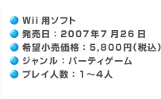
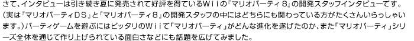
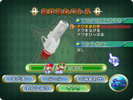

|
 |
 |
![プロデューサー[池田 淳さん]](../p1/img/hudson_photo1.jpg)
![シニアディレクター[菊池賢次さん]](../p1/img/hudson_photo2.jpg)
![プロデューサー[佐藤 浩]](img/nintendo_photo1.jpg)
![コーディネーション[生田良子]](img/nintendo_photo3.jpg)

| 『マリオパーティ８』が７月に発売されて、周りの方の反応はいかがでしたか？ |
| 西谷： | 私には幼稚園に通っている娘がいるんですけど、友達と一緒に楽しんでくれているようです。 |
| じゃあ、お父さんが作ったゲームをみんなで遊んでいるわけですね？ |
| 西谷： | そうです。 これをウチのお父さんが作ったんだよ、と言っても、誰も信じてくれないようですね。 |
| 佐藤： | 佐藤家で『マリオパーティ８』を遊ぶところを見ていて感じたのは、初めて遊ぶ人に説明しやすい点です。「次、こうやって振るんやで」とか身振りで見せてやれる。いままでのシリーズ作品では、Aボタンでジャンプ、Bボタンでパンチ、そういうことをミニゲームが始まる前に説明するんですけど、これがじつはかなり面倒くさかった。今回は簡単に説明できますからね。 |
| なるほど。たしかにわかりやすいですね。 |
| 佐藤： | ミニゲームが始まる前に操作説明画面でＷｉｉリモコンが動いているのも良かったですね。それが人に説明しやすくて、評判が広がりやすい。多くの人に受け入れていただいたのはそういった理由からだと思います。 |
| 西谷： | あれはやって良かったです。最初の操作説明画面はただの静止画だったんですよ。 それを任天堂さんの方から３Ｄモデルで表示して、アニメーションで動かしてほしいと言われまして。なんとか再現したんですけど結果的には非常に良かったと思っています。 |
| 佐藤： | 任天堂からやってくれと頼んだ記憶はないんですけど……そうでしたか？ |
| 廣瀬＆ 生田： |
はい、お願いしました。 |
| 佐藤： | 僕の記憶では、開発中にお子さんたちを呼んでテストプレイしてもらったときに、全然できていないというのがわかって、これはまずいなあということで何を改善しようかというときにハドソンさんから意見が出たと思うんですけど、この記憶は誤りですか？ |
| 西谷： | ……いや、やっぱり私の方で提案したかも。 |
| 一同： | （笑）。 |
| 子供さんたちのテストプレイについてですが、やっぱり子供たちの反応は正直ですか？ |
| 佐藤： | ものすごく正直です。面白くなかったら、もう、怒ってしまいますしね（笑）。『マリオパーティ８』のときはハドソンの開発スタッフの皆さんに来ていただいて一緒に見てもらったんです。 |
| 西谷： | バッティングのミニゲームとか、打つたびにテレビへ近づいていくお子さんとかがいて。 |
| 渡辺： | 実際は、そんなに振らなくても操作できるんですけれど、バットを実際に振っているので、なぜか振っていると一歩一歩前に出ちゃうみたいなんですよね。 |
| 廣瀬： | 最初は椅子に座ってプレイしているのに、１人が立つと、なぜかみんな立ち上がりだすんですよ。 |
| Ｗｉｉリモコンを使うことでミニゲームに変化は？ |
| 西谷： | まず、あのコントローラを初めて見たときに、はっきりいってガッツポーズだったんですよ。「マリオパーティ」のために作ってもらったんじゃないかなと思ったぐらいでしたね（笑）。 で、実際アイデアとかもシリーズを重ねてかなりキツくなっていたんですけど、新しいコントローラをいただいて、新しいアイデアがどんどん出てきたんです。 |
| 菊池： | 以前よりもアイデアがたくさん集まりましたね。それだけＷｉｉリモコンが発想を刺激してくれたんだと思います。 |
| 西谷： | こうなったらあのＷｉｉリモコンが持つあらゆる機能を使ってやろうと。前に突き出してパンチもするし、縦に振ってシェイクもする、ひねってスノボもする、そういう意味では今回は作り手側も楽しかったです。 |
| 今回はミニゲームをプレイ中の人を見ていても面白いです。 |
| 西谷： | 最初は「頭の上に載っけて」とかも考えていたんですけれど、（『おどる メイド イン ワリオ』で）先にやられてしまいました。 |
| 菊池： |  でも、それらのゲームに負ける気はしなかったですね。やっぱりＷｉｉリモコンのポテンシャルが高いというのがあるんですけど、例えば『シェイクでプシュー』とかでプレイヤーに動きをつけることができると、横で見ている人も楽しいと思うんです。今回はそういうアイデアがたくさん盛り込まれています。 でも、それらのゲームに負ける気はしなかったですね。やっぱりＷｉｉリモコンのポテンシャルが高いというのがあるんですけど、例えば『シェイクでプシュー』とかでプレイヤーに動きをつけることができると、横で見ている人も楽しいと思うんです。今回はそういうアイデアがたくさん盛り込まれています。 |